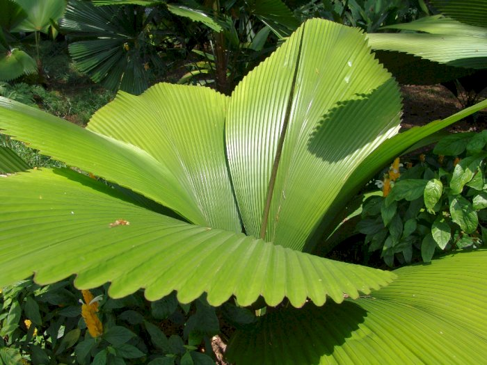

| Nama |
Foto |
Tentang |
| Rafflessia Arnoldi |
|
Tumbuhan padma raksasa yang bernama Rafflesia Arnoldi merupakan tumbuhan parasit yang terkenal karena ukuran bunga yang sangat besar, bahkan bunga ini merupakan bunga yang paling besar di dunia. Bunga ini tumbuh di jaringan merambat dan tidak mempunyai daun, sehingga tidak mampu untuk berfotosintesis. Rafflesia Arnoldi ini pertama kali ditemukan pada tahun 1818 di hutan tropis Bengkulu (Sumatera) di dekat Sungai Manna, Lubuk tapi, Kapbupaten Bengkulu Selatan. Karena penemuan bunga ini di Bengkulu, maka Bengkulu dijuluki sebagai The Land of Rafflessia. |
| Anggrek |
|
Bunga Anggrek mempunyai nama latin Orchidaceace. Bunga ini merupakan jenis bunga dengan spesies yang paling banyak di Indonesia. Habitat bunga Anggrek banyak tersebar di daerah tropis, namun bunga Anggrek ini juga terdapat di daerah Sirkumpolar sampai ke wilayah tropika basah. |
| Bunga Bangkai |
|
Bunga Bangkai juga disebut dengan Suweg, dalam bahasa latin disebut dengan Amorphophallus titanum Becc. Bunga bangkai ini merupakan jenis tumbuhan dari jenis talas- talasan endemik dari Sumatra yang juga disebut dengan bunga majemuk terbesar. Bunga bangkai ini dinamakan demikian karena bunga ini mengeluarkan bau yang busuk. Padahal aroma busuk tersebut berfungsi mengundang serangga kumbang atau lalat untuk menyerbuki bunganya. |
| Daun Sang |
 |
Jenis tumbuhan atau flora tipe Asiatis yang selanjutnta adalah Daun Sang. Daun Sang juga dikenal dengan nama latin Johannestijsmania Altifrons. Daun ini mempunyai ukuran yang sangat besar, bahkan hingga mencapai enam meter.lebar daunnya mencapai 1 meter. Daun Sang ini merupakan salah satu dari empat spesies anggota genus Johannestijsmania yang hanya ditemukan di wilayah Asia Tenggara saja. |
| Kantung Semar |
|
Kantung Semar, pasti kita sudah sering mendengar tentangnya bukan? kantung semar merupakan tumbuhan yang tumbuh di daerah tropis yang mempunyai bentuk yang sangat unik. Keunikan bentuk tumbuhan ini berada pada kantungnya yang menggantung pada seutas sulur yang berbentuk spiral, dan keluar dari ujung daun. Selian bentuknya, keunikan lainnya juga dilihat dari corong yang berisi cairan. Di dalam cairan tersbeut kita bisa menemukan beragam serangga.
Hal ini karena kantong semar menggunakan keistimewaan tersebut untuk menarik perhatian serangga. Apabila ada serangga yang berada di atas kantong semar, maka secara otomatis kantong semar akan megatupkan mulut kantungnya, seringga serangga tersebut terperangkap di dalam kantungnya. Dengan demikian serangga tersbeut pasti akan mati di dalam kantong tersebut. |